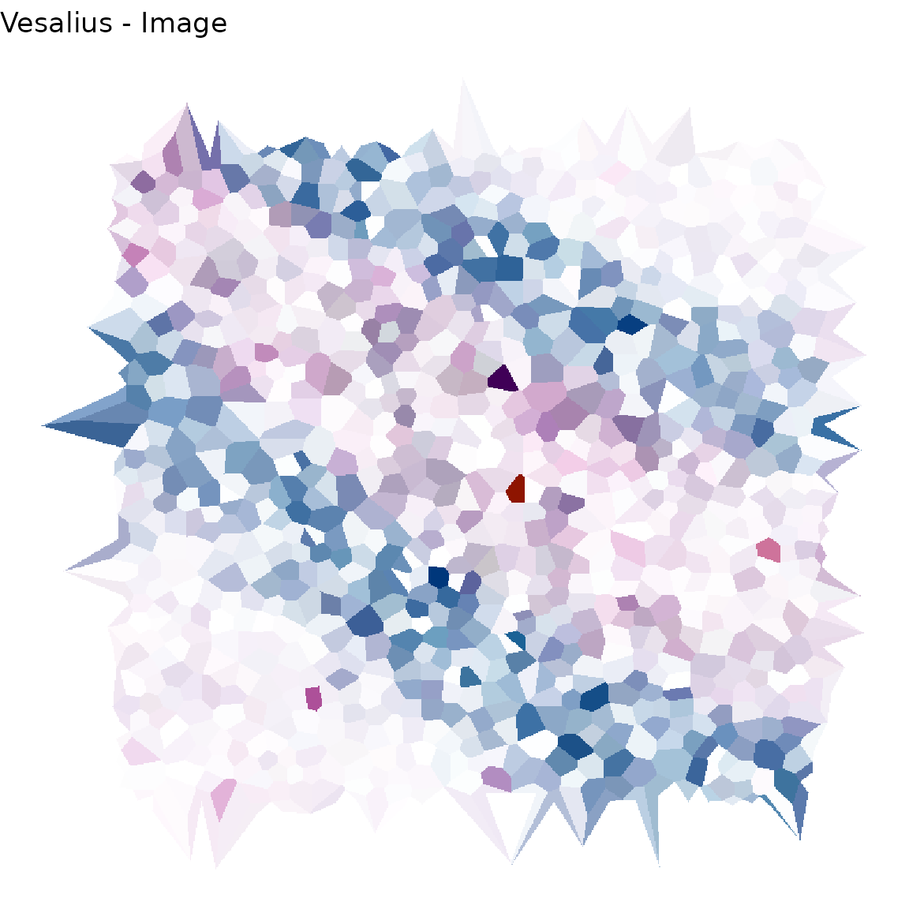
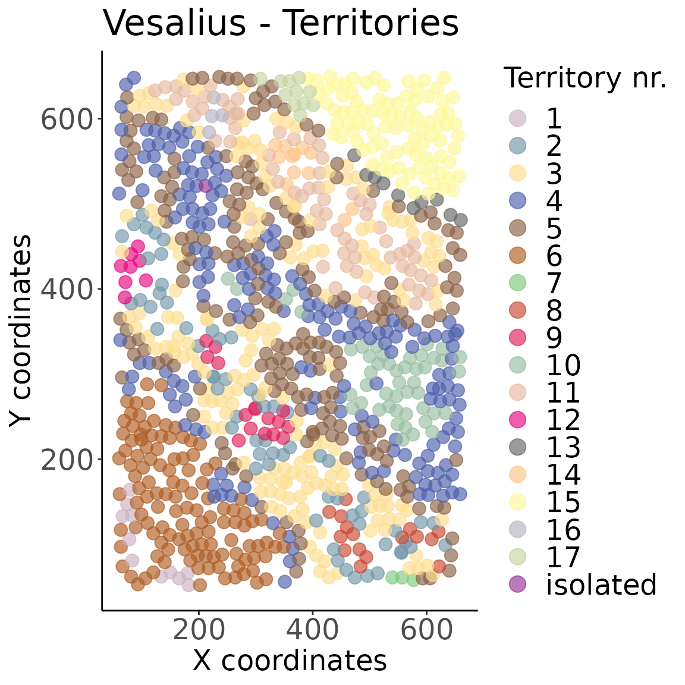

Vesalius.RmdDo you like to live in the fast lane? Do you sigh every time you see a long vignette? Do you wish there was a TLDR on everything?
I understand.
Welcome to the Vesalius quick start!
In this vignette, you will find a very short guide on how to work with Vesalius. Vesalius provides an internal data set taken from real Spatial transcrtiptomic data. For an in depth view of Vesalius, please refer to Vesalius_Analysis.Rmd.
For all intents and purposes, this is a dummy data set and should only be used to get a feel for the Vesalius package. We strongly advise you to use real and complete data sets to fully understand the Vesalius package and its benefits.
Vesalius is a tool to perform high-resolution in silico anatomization and molecular characterization from ST data without requiring companion images.
This is achieved by converting ST data into images: PCA loading values are embedded into RGB colour channels by taking the sum of the absolute value of all loading values associated to each bead on the ST array.
Image analysis techniques are applied to the image and anatomical territories can subsequently be extracted.
First, let’s load the package and the data. Data originates from slide-seqV2 data (availble at (Single Cell Portal)[https://singlecell.broadinstitute.org/single_cell/study/SCP948/robust-decomposition-of-cell-type-mixtures-in-spatial-transcriptomics#study-download]).
For sake of simplicity, Vesalius takes a small subset of this data set and stores it in the form of a Seurat object.
library(vesalius)## Loading required package: Seurat## Attaching SeuratObject## Loading required package: imager## Loading required package: magrittr## Registered S3 method overwritten by 'imager':
## method from
## plot.imlist##
## Attaching package: 'imager'## The following object is masked from 'package:magrittr':
##
## add## The following objects are masked from 'package:stats':
##
## convolve, spectrum## The following object is masked from 'package:graphics':
##
## frame## The following object is masked from 'package:base':
##
## save.image## Loading required package: dplyr##
## Attaching package: 'dplyr'## The following objects are masked from 'package:stats':
##
## filter, lag## The following objects are masked from 'package:base':
##
## intersect, setdiff, setequal, union## Loading required package: tidyr##
## Attaching package: 'tidyr'## The following object is masked from 'package:imager':
##
## fill## The following object is masked from 'package:magrittr':
##
## extract## Loading required package: ggplot2## Warning: replacing previous import 'imager::fill' by 'tidyr::fill' when loading
## 'vesalius'## [1] "vesalius"Second, we pre-process the data using Seurat
# First create a copy of raw data for later use
# When working on isolated territories, we want to run pre-processing
# on raw counts not on already transformed counts.
copy <- vesalius
# Preprocessing Spatial transcriptomic data
vesalius <- NormalizeData(vesalius)
vesalius <- FindVariableFeatures(vesalius, nfeatures = 2000)
vesalius <- ScaleData(vesalius)## Centering and scaling data matrixThird, we convert a count matrix (stored in a Seurat object) to RGB coded coordinates. We will only produce one slice (i.e. PC1 to PC3)
vesalius <- rgbPCA(vesalius,slices = 1)## #------------------------------------------------------------------------#
## 2021-10-28 10:13:38 Running Principle Component Analysis in 1 slices
## 2021-10-28 10:13:38 Converting Loading Values to RGB in slice 1
## 2021-10-28 10:13:44 Normalising RGB values
## #------------------------------------------------------------------------#Forth, we create an actual image by using a combination of voronoi diagrams and tile rasterisation.
vesalius <- buildImageArray(vesalius, sliceID = 1, invert =T)## #------------------------------------------------------------------------#
## 2021-10-28 10:13:44 Checking Vesalius Input - Using slice 1
## 2021-10-28 10:13:44 Class coersion to numeric
## 2021-10-28 10:13:44 Inverting Colours
## 2021-10-28 10:13:44 Filtering outlier beads
## 2021-10-28 10:13:44 Generating Voronoi Tesselation
## 2021-10-28 10:13:44 Rasterising Tiles
## 2021-10-28 10:13:52 Filtering Triangles that exceed area threshold
## #------------------------------------------------------------------------#
# Let's have a look shall we?
Vesalius_image <- imagePlot(vesalius,as.cimg =FALSE) + theme_void()
print(Vesalius_image)
Firth, we can apply image analysis techniques such as histogram equalisation, variance regularisation, smoothing and segmentation.
# Histogram EQ
vesalius <- equalizeHistogram(vesalius,sleft = 2.5, sright=2.5,invert =T)## #------------------------------------------------------------------------#
## 2021-10-28 10:13:58 Inverting Colours## Warning in as.cimg.data.frame(.): Guessing image dimensions from maximum
## coordinate values
## Warning in as.cimg.data.frame(.): Guessing image dimensions from maximum
## coordinate values## 2021-10-28 10:14:02 Equalizing Histogram
## 2021-10-28 10:14:03 Rebuilding Data Frame from image
## #------------------------------------------------------------------------#
# Variance regularisation
vesalius <- regulariseImage(vesalius, lambda = 10,
niter = 200, normalise=T)## #------------------------------------------------------------------------### Warning in as.cimg.data.frame(.): Guessing image dimensions from maximum
## coordinate values## 2021-10-28 10:14:05 Regularising Image
## #------------------------------------------------------------------------#
# Smoothing
# !!!Optional!!! -
vesalius <- smoothArray(vesalius,method = "box", box = 1)## Warning in as.cimg.data.frame(select(image, c("x", "y", "cc", "value"))):
## Guessing image dimensions from maximum coordinate values## 2021-10-28 10:14:18 Smoothing Iteration 1
# Segmentation
# This function provides smoothing internally.
vesalius <- iterativeSegmentation.array(vesalius,
colDepth = 6,
smoothIter = 20,
method = c("iso","median"),
sigma=1.5,
box = 10,
useCenter = T,
invert =T)## #------------------------------------------------------------------------### Warning in as.cimg.data.frame(select(image, c("x", "y", "cc", "value"))):
## Guessing image dimensions from maximum coordinate values## 2021-10-28 10:14:20 Inverting Colours## Warning in as.cimg.data.frame(.): Guessing image dimensions from maximum
## coordinate values## Warning in as.cimg.data.frame(imgCopy): Guessing image dimensions from maximum
## coordinate values## 2021-10-28 10:14:24 Smoothing Iteration 1
2021-10-28 10:14:27 Smoothing Iteration 2
2021-10-28 10:14:29 Smoothing Iteration 3
2021-10-28 10:14:32 Smoothing Iteration 4
2021-10-28 10:14:34 Smoothing Iteration 5
2021-10-28 10:14:37 Smoothing Iteration 6
2021-10-28 10:14:39 Smoothing Iteration 7
2021-10-28 10:14:42 Smoothing Iteration 8
2021-10-28 10:14:44 Smoothing Iteration 9
2021-10-28 10:14:47 Smoothing Iteration 10
2021-10-28 10:14:49 Smoothing Iteration 11
2021-10-28 10:14:51 Smoothing Iteration 12
2021-10-28 10:14:54 Smoothing Iteration 13
2021-10-28 10:14:56 Smoothing Iteration 14
2021-10-28 10:14:59 Smoothing Iteration 15
2021-10-28 10:15:01 Smoothing Iteration 16
2021-10-28 10:15:03 Smoothing Iteration 17
2021-10-28 10:15:06 Smoothing Iteration 18
2021-10-28 10:15:08 Smoothing Iteration 19
2021-10-28 10:15:10 Smoothing Iteration 20
## 2021-10-28 10:15:14 Segmentation Iteration 1
## #------------------------------------------------------------------------#
# Isolating territories from colour segments
vesalius <- isolateTerritories.array(vesalius,
captureRadius = 0.1,
minBar = 1)## #------------------------------------------------------------------------#
## 2021-10-28 10:15:14 Pooling territory 1
2021-10-28 10:15:14 Pooling territory 2
2021-10-28 10:15:14 Pooling territory 3
2021-10-28 10:15:15 Pooling territory 4
2021-10-28 10:15:15 Pooling territory 5
2021-10-28 10:15:16 Pooling territory 6
## #------------------------------------------------------------------------#
vesalius## Registered S3 method overwritten by 'cli':
## method from
## print.boxx spatstat.geom## # A tibble: 1,114,014 × 8
## barcodes x y cc value tile cluster territory
## <chr> <dbl> <dbl> <int> <dbl> <dbl> <dbl> <chr>
## 1 AAGCAGTATGCGAT 146 1 1 0.865 0 3 1
## 2 AACGCTTAGAATCT 146 1 1 0.865 0 3 1
## 3 AGCTGTTGAGCTCC 146 1 1 0.865 0 3 1
## 4 AACGCTTAGAATCT 146 2 1 0.865 0 3 1
## 5 AACGCTTAGAATCT 146 3 1 0.865 0 3 1
## 6 AAGCAGTATGCGAT 147 3 1 0.865 0 3 1
## 7 AGCTGTTGAGCTCC 147 3 1 0.865 0 3 1
## 8 GACGTATATCTGCA 516 3 1 0.523 0 4 2
## 9 GATAATGGTCACCC 516 3 1 0.523 0 4 2
## 10 AACGCTTAGAATCT 146 4 1 0.865 0 3 1
## # … with 1,114,004 more rowsSixth, we can visualise the territories.
# Let's have a look!
imgTerritory <- territoryPlot(vesalius, randomise = TRUE,cex =15 , cex.pt=3.5)
print(imgTerritory)
Finally, we can extract territories to run a more in depth analysis. This returns a Seurat object with all selected territories. We can also find differential gene expression between territories.
# extract terriotry from seurat object
ter <- extractTerritories(vesalius,copy,seedID= 1)## #------------------------------------------------------------------------#
## 2021-10-28 10:15:19 Extracting territory 1
## 2021-10-28 10:15:19 Converting to pixset and morphing territory## Warning in as.cimg.data.frame(.): Guessing image dimensions from maximum
## coordinate values## #------------------------------------------------------------------------#
ter## An object of class Seurat
## 23264 features across 11 samples within 1 assay
## Active assay: Spatial (23264 features, 0 variable features)
# get all markers related to all territories
all <- extractAllMarkers(vesalius,copy)## #------------------------------------------------------------------------#
## 2021-10-28 10:15:19 Checking and extracting Counts
## ===> 1 VS Remaining <===
===> 10 VS Remaining <===
===> 11 VS Remaining <===
===> 12 VS Remaining <=== ## Warning: Territory 12 does not contain enough cells.
##
## Territory will be skipped## ===> 13 VS Remaining <===
===> 14 VS Remaining <===
===> 15 VS Remaining <===
===> 16 VS Remaining <=== ## Warning: Territory 16 does not contain enough cells.
##
## Territory will be skipped## ===> 17 VS Remaining <===
===> 2 VS Remaining <===
===> 3 VS Remaining <===
===> 4 VS Remaining <===
===> 5 VS Remaining <===
===> 6 VS Remaining <===
===> 7 VS Remaining <=== ## Warning: Territory 7 does not contain enough cells.
##
## Territory will be skipped## ===> 8 VS Remaining <===
===> 9 VS Remaining <===
===> isolated VS Remaining <=== ## Warning: Territory isolated does not contain enough cells.
##
## Territory will be skipped
head(all)## # A tibble: 6 × 8
## genes p.value p.value.adj seedPct queryPct logFC seedTerritory queryTerritory
## <chr> <dbl> <dbl> <dbl> <dbl> <dbl> <chr> <chr>
## 1 Actb 1.82e-2 1 0.273 0.566 -0.802 1 Remaining
## 2 Akt2 7.35e-6 0.00248 0.273 0.0308 0.342 1 Remaining
## 3 Aldoa 2.96e-2 1 0.364 0.586 -0.815 1 Remaining
## 4 Apod 1.50e-2 1 0.273 0.0809 0.400 1 Remaining
## 5 Apoe 1.55e-3 0.518 0.909 0.623 0.565 1 Remaining
## 6 Aqp4 1.62e-7 0.0000549 0.364 0.0405 0.330 1 Remaining
# get markers associated with on or more territories
one <- extractMarkers(vesalius, copy, seed = c(1))## #------------------------------------------------------------------------#
## 2021-10-28 10:15:47 Checking and extracting Counts
## 2021-10-28 10:15:47 Extracting Seed territories
## 2021-10-28 10:15:47 Extracting Query territories
## 2021-10-28 10:15:47 Computing Differentially Expressed Genes
## ===> 1 VS Remaining <===
## #------------------------------------------------------------------------#
head(one)## # A tibble: 6 × 8
## genes p.value p.value.adj seedPct queryPct logFC seedTerritory queryTerritory
## <chr> <dbl> <dbl> <dbl> <dbl> <dbl> <chr> <chr>
## 1 Actb 1.87e-2 1 0.273 0.564 -0.800 "1 " Remaining
## 2 Akt2 1.01e-5 0.00339 0.273 0.0317 0.341 "1 " Remaining
## 3 Aldoa 2.96e-2 1 0.364 0.586 -0.814 "1 " Remaining
## 4 Apod 1.48e-2 1 0.273 0.0807 0.400 "1 " Remaining
## 5 Apoe 1.58e-3 0.525 0.909 0.625 0.564 "1 " Remaining
## 6 Aqp4 1.55e-7 0.0000520 0.364 0.0403 0.331 "1 " Remaining
# comparing territories
two <- extractMarkers(vesalius, copy, seed = c(1), query = c(2,3))## #------------------------------------------------------------------------#
## 2021-10-28 10:15:48 Checking and extracting Counts
## 2021-10-28 10:15:48 Extracting Seed territories
## 2021-10-28 10:15:48 Extracting Query territories
## 2021-10-28 10:15:48 Computing Differentially Expressed Genes
## ===> 1 VS 2 3 <===
## #------------------------------------------------------------------------#
head(two)## # A tibble: 6 × 8
## genes p.value p.value.adj seedPct queryPct logFC seedTerritory queryTerritory
## <chr> <dbl> <dbl> <dbl> <dbl> <dbl> <chr> <chr>
## 1 Actb 1.87e-2 1 0.273 0.564 -0.800 "1 " "2 3 "
## 2 Akt2 1.01e-5 0.00339 0.273 0.0317 0.341 "1 " "2 3 "
## 3 Aldoa 2.96e-2 1 0.364 0.586 -0.814 "1 " "2 3 "
## 4 Apod 1.48e-2 1 0.273 0.0807 0.400 "1 " "2 3 "
## 5 Apoe 1.58e-3 0.525 0.909 0.625 0.564 "1 " "2 3 "
## 6 Aqp4 1.55e-7 0.0000520 0.364 0.0403 0.331 "1 " "2 3 "